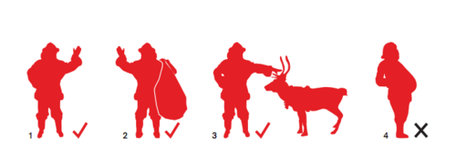

Thu, 23 Dec 2010 12:49:00 · Brands · Holidays · Santa · X-Mas · Design
Santa Visualized as a Brand

Interesting spin on how Santa Claus when visualized as a brand could potentially shift your paradigm about this classic X-Mas figure. Sled away to see the full study here.
Happy holidays, y'all!